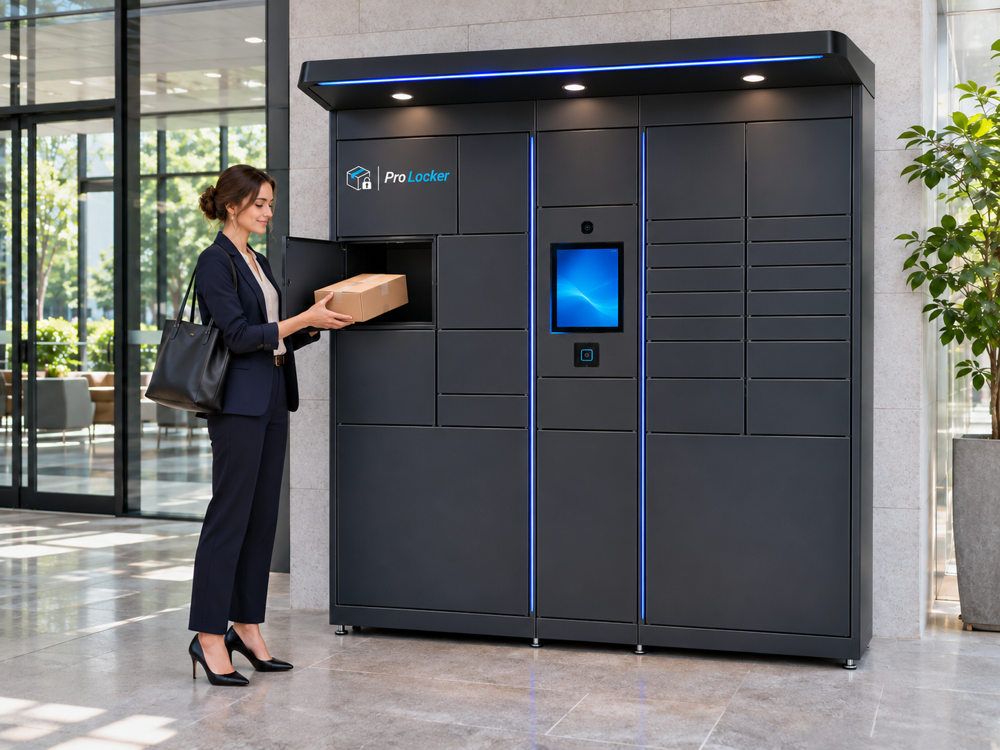
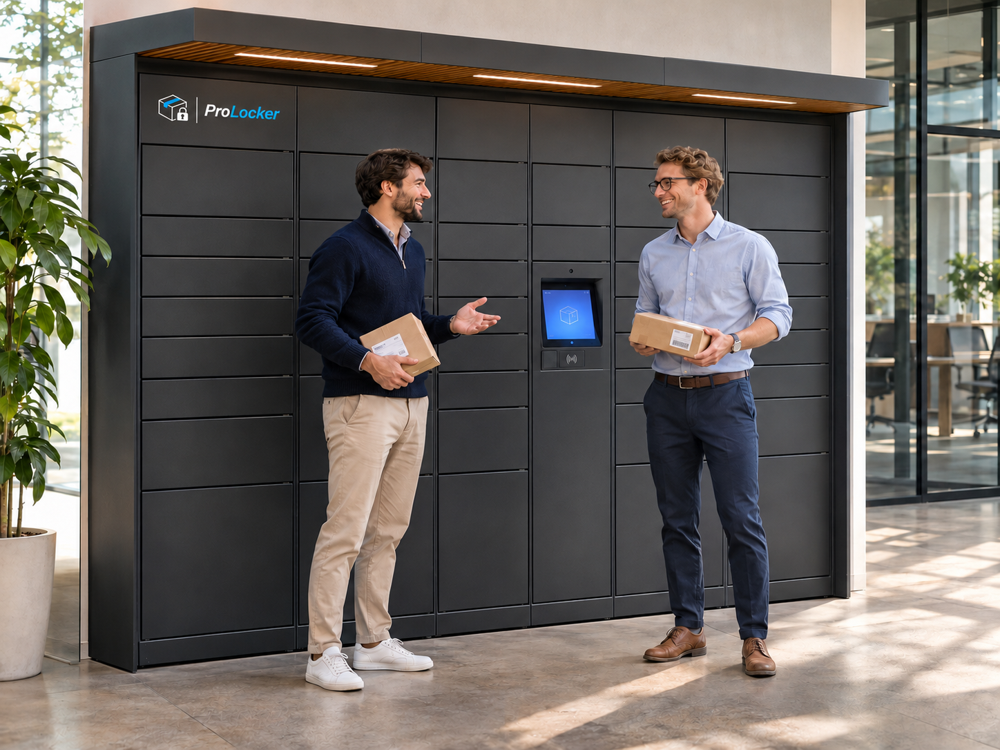
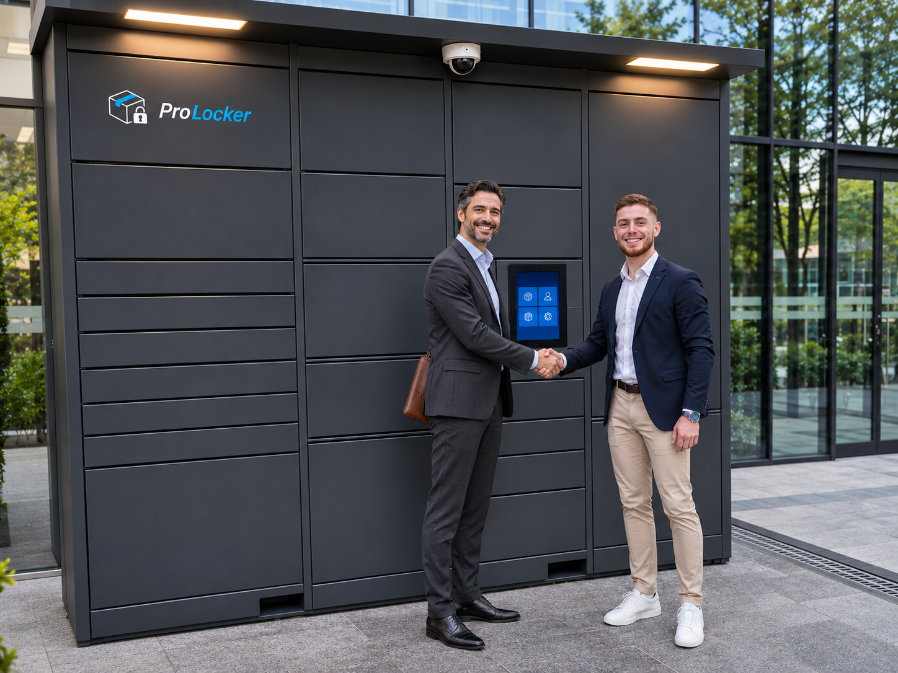

L’entreprise
Une réception de colis plus organisée, sans faire de l’accueil le point de passage obligé.
- Moins d’interruptions à l’accueil
- Gestion centralisée des livraisons
- Opérations quotidiennes plus fluides
Casiers connectés en location
Une nouvelle façon de gérer vos livraisons grâce à des casiers connectés en location : une solution pensée pour votre environnement, vos équipes et vos contraintes.
L’expérience ProLocker
Une organisation plus fluide pour les personnes qui font vivre la livraison au quotidien.
Une réception de colis plus organisée, sans faire de l’accueil le point de passage obligé.
Un retrait simple, adapté à la disponibilité de chacun et aux règles de l’établissement.
Un point de dépôt clairement identifié pour faciliter leur passage sur site.

Une installation adaptée
L’implantation se pense au cas par cas, avec l’objectif d’intégrer la solution dans le parcours réel de vos équipes et visiteurs.
La location tout compris
ProLocker accompagne votre projet de location, de l’installation à l’exploitation, selon les prestations prévues au contrat.
Un service facultatif
L’entreprise peut choisir d’autoriser la réception de colis personnels. Cette option reste facultative et dépend de l’organisation mise en place sur le site.
Les possibilités d’expédition de colis peuvent également être étudiées selon les fonctionnalités disponibles et les transporteurs compatibles.

Estimez simplement les gains de temps associés à une gestion des colis plus fluide.

Ma vision
« Je m’appelle Louis Garcia, fondateur de ProLocker. Vous me voyez sur la photo, à droite. J’ai créé ProLocker avec une conviction simple : une solution technique doit avant tout faciliter la vie des professionnels. Mon objectif, avec notre réseau de collaborateurs, est d’écouter chaque besoin, de comprendre les contraintes du terrain et de proposer un accompagnement clair, humain et fiable, de la première étude jusqu’à l’installation. »Louis Garcia · Fondateur de ProLocker
Ouvert à vos enjeux
ProLocker reste avant tout votre interlocuteur pour les casiers connectés. Notre réseau peut également étudier d’autres projets professionnels adaptés à vos besoins.
Vous n’avez pas besoin de casiers connectés ? Vous avez peut-être un autre projet. Parlons-en.
Parlons de votre projet